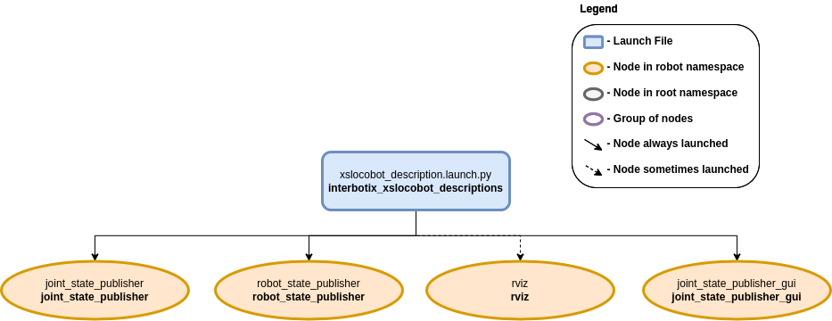

LoCoBot Descriptions
 View Package on GitHub
View Package on GitHub
Overview
This package contains the URDFs and meshes for the robots in the Interbotix X-Series LoCoBot Family. The STL files for each robot are located in a unique folder inside the meshes directory. Next, the URDFs for the robot are located in the urdf directory. They are written in 'xacro' format so that users have the ability to customize what parts of the URDF get loaded to the parameter server (see the 'Usage' section below for details). Note that all the other ROS packages in the sub-repo reference this package to launch the robot description.
Structure
This package contains the xslocobot_description.launch file responsible for loading parts or all of the robot model. It launches up to four nodes as described below:
- joint_state_publisher - responsible for parsing the 'robot_description' parameter to find all non-fixed joints and publish a JointState message with those joints defined.
- joint_state_publisher_gui - does the same thing as the 'joint_state_publisher' node but with a GUI that allows a user to easily manipulate the joints.
- robot_state_publisher - uses the URDF specified by the parameter robot_description and the joint positions from the joint_states topic to calculate the forward kinematics of the robot and publish the results via tf.
- rviz - displays the virtual robot model using the transforms in the 'tf' topic.
Usage
This package contains two launch files:
- xslocobot_description.launch.py - should be included in any launch tree in which you want to load and parse the URDF, or can be launched to view any robot model's URDF in RViz.
- remote_view.launch.py which simply loads RViz in the proper namespace.
xslocobot_description.launch.py
To run this package, type the line below in a terminal. Note that the robot_model argument must
be specified as the name of one of the four locobot models. For example, to launch a LoCoBot with a
WidowX-200 arm, type:
$ ros2 launch interbotix_xslocobot_descriptions xslocobot_description.launch.py robot_model:=locobot_wx200 use_joint_pub_gui:=true
This is the bare minimum needed to get up and running. Take a look at the table below to see how to further customize with other launch file arguments.
| Argument | Description | Default | Choices |
|---|---|---|---|
| robot_model | model type of the Interbotix LoCoBot such as locobot_base or locobot_wx250s. |
EnvVar(INTERBOTIX_XSLOCOBOT_ROBOT_MODEL) |
locobot_base, locobot_px100, locobot_wx200, locobot_wx250s |
| robot_name | name of the robot (could be anything but defaults to locobot). |
locobot |
|
| arm_model | the Interbotix Arm model on the LoCoBot; this should never be set manually but rather left to its default value. | PythonExpr('"mobile_" + "' + LaunchConfig(robot_model) + '".split("_")[1]') |
|
| use_lidar | if true, the RPLidar node is launched. |
false |
true, false |
| use_rviz | launches RViz if set to true. |
true |
true, false |
| rviz_frame | fixed frame in RViz; this should be changed to map or odom if mapping or using local odometry respectively. |
LaunchConfig(robot_name) + '/base_link' |
|
| rvizconfig | file path to the config file RViz should load. | LocalVar('FindPackageShare(pkg= interbotix_xslocobot_descriptions) + 'rviz' + 'xslocobot_description.rviz'') |
|
| use_joint_pub | if true, launches the joint_state_publisher node. |
false |
true, false |
| use_joint_pub_gui | if true, launches the joint_state_publisher GUI. |
false |
true, false |
| rate | JointState topic publish rate in Hz. | 10 |
|
| source_list | list of joint state topics that should be merged together. | '[]' | |
| use_sim_time | tells ROS nodes asking for time to get the Gazebo-published simulation time, published over the ROS topic /clock. | false |
true, false |
| base_type | the base type of the LoCoBot. | EnvVar(INTERBOTIX_XSLOCOBOT_BASE_TYPE) |
kobuki, create3 |
| use_gripper | if true, the default gripper is included in the robot_description; if false, it is left out; set to false if not using the default gripper. |
true |
true, false |
| show_ar_tag | if true, the AR tag mount is included in the robot_description; if false, it is left out; set to true if using the AR tag mount in your project. |
true |
true, false |
| show_gripper_bar | if true, the gripper_bar link is included in the robot_description; if false, the gripper_bar and finger links are not loaded. Set to false if you have a custom gripper attachment. |
true |
true, false |
| show_gripper_fingers | if true, the gripper fingers are included in the robot_description; if false, the gripper finger links are not loaded. Set to false if you have custom gripper fingers. |
true |
true, false |
| show_lidar | if true, the lidar is included in the robot_description; only set to true if you purchased a lidar with your locobot. |
false |
true, false |
| external_urdf_loc | the file path to the custom urdf.xacro file that you would like to include in the Interbotix robot's urdf.xacro file. | '' | |
| hardware_type | configures the robot_description to use the actual hardware, fake hardware, or hardware simulated in Gazebo. |
actual |
actual, fake, gz_classic |
| robot_description | URDF of the robot; this is typically generated by the xacro command. | Command(FindExec(xacro) + ' ' + LocalVar('FindPackageShare(pkg= interbotix_xslocobot_descriptions) + 'urdf' + 'locobot.urdf.xacro'') + ' ' + 'arm_model:=' + LaunchConfig(arm_model) + ' ' + 'robot_name:=' + LaunchConfig(robot_name) + ' ' + 'base_model:=' + LaunchConfig(base_type) + ' ' + 'robot_model:=' + LaunchConfig(robot_model) + ' ' + 'use_gripper:=' + LaunchConfig(use_gripper) + ' ' + 'show_ar_tag:=' + LaunchConfig(show_ar_tag) + ' ' + 'show_gripper_bar:=' + LaunchConfig(show_gripper_bar) + ' ' + 'show_gripper_fingers:=' + LaunchConfig(show_gripper_fingers) + ' ' + 'show_lidar:=' + LaunchConfig(show_lidar) + ' ' + 'external_urdf_loc:=' + LaunchConfig(external_urdf_loc) + ' ' + 'hardware_type:=' + LaunchConfig(hardware_type) + ' ') |
remote_view.launch.py
This launch file should be run on a networked ROS computer to visualize the robot in RViz in real time. See more in the ROS 2 Interface Quickstart.
To run this launch file, enter the command below in a terminal.
$ ros2 launch interbotix_xslocobot_descriptions remote_view.launch.py
| Argument | Description | Default | Choices |
|---|---|---|---|
| robot_name | name of the robot (could be anything but defaults to locobot). |
locobot |
|
| rviz_frame | fixed frame in RViz; this should be changed to map or odom if mapping or using local odometry respectively. |
LaunchConfig(robot_name) + '/base_footprint' |
|
| rvizconfig | file path to the config file RViz should load. | LocalVar('FindPackageShare(pkg= interbotix_xslocobot_descriptions) + 'rviz' + 'xslocobot_description.rviz'') |